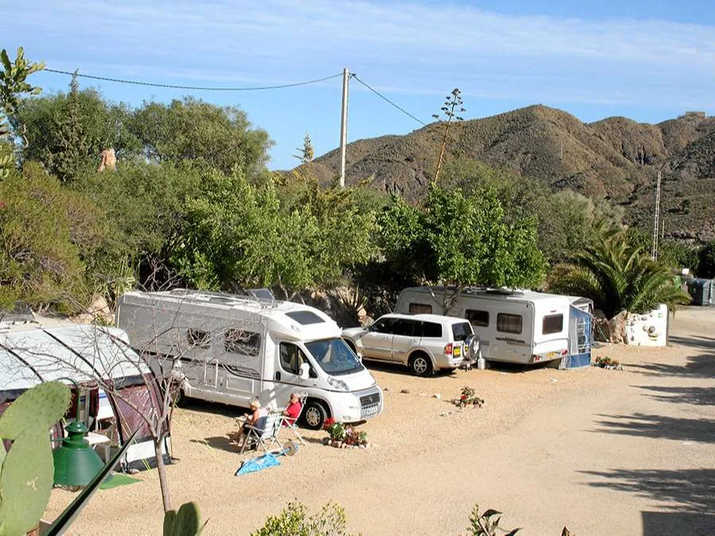
Parcelas
30 parcelas · 2 alturas
- Tienda, caravana o autocaravana
- Toma de electricidad opcional
- Un vehículo incluido
ConsultarParcela + 2 adultos
Calcular
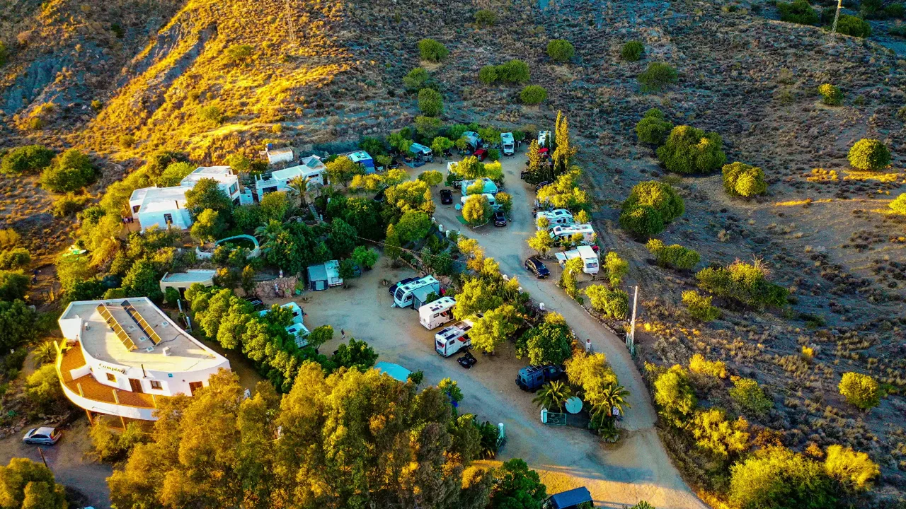
Solo 30 parcelas en dos alturas, junto a las últimas playas sin construir de la costa de Almería.
Sopalmo es una pedanía a las afueras de Mojácar, metida en un valle con la Sierra Cabrera detrás y el Mediterráneo a cuatro kilómetros. El camping ocupa una ladera con 30 parcelas en dos alturas, y muy cerca empieza el Parque Natural de Cabo de Gata: playa de los Muertos, calas vírgenes y los pueblos blancos del parque están a pocos minutos en coche.
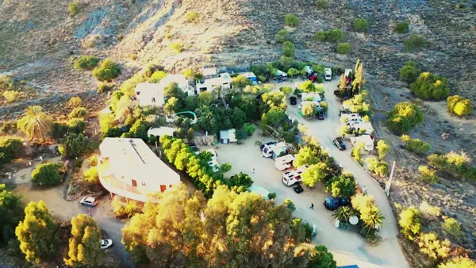
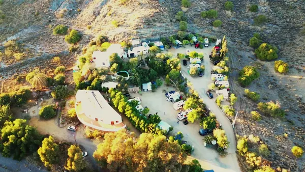
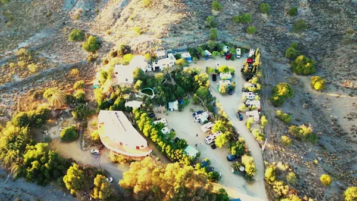
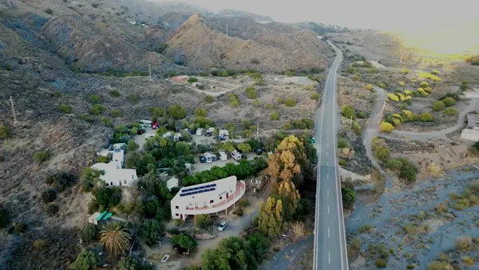
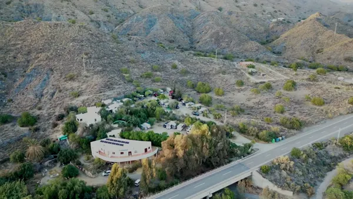
La playa de los Muertos, el Arrecife de las Sirenas y las calas del Cabo de Gata se recorren desde el camping sin prisa.
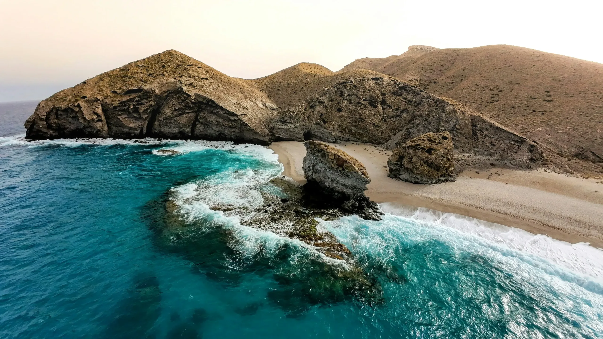
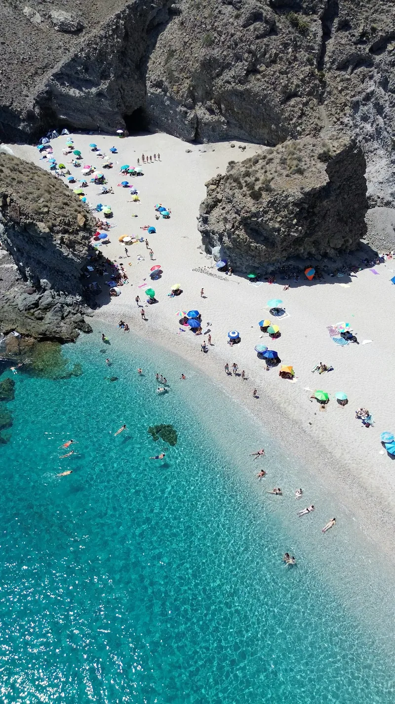
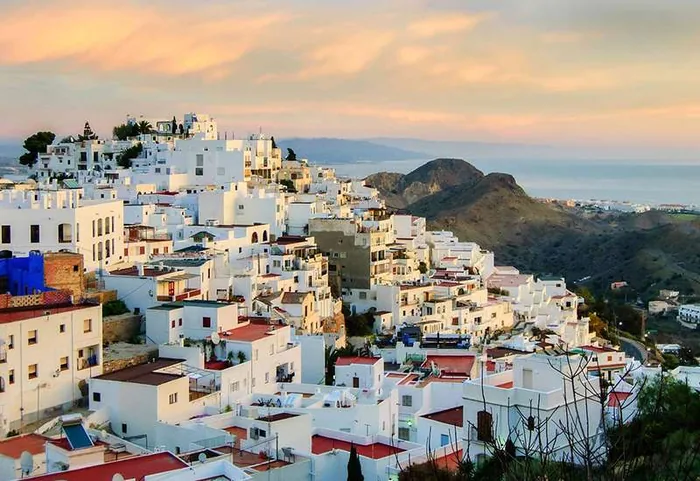
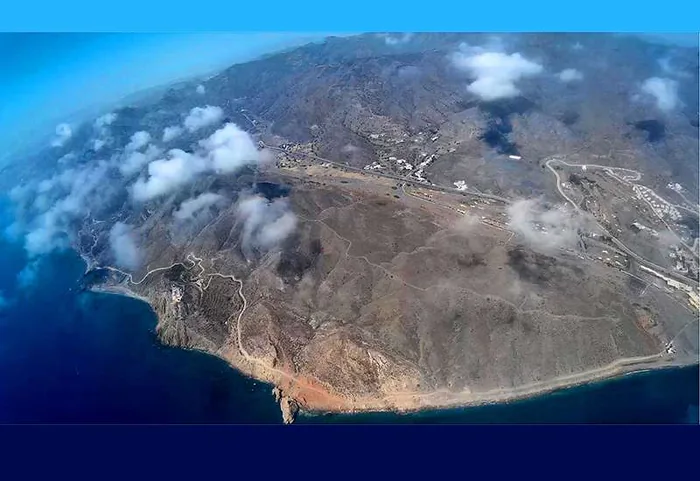
Tres formas de disfrutar del mismo sitio. Los precios salen de nuestro sistema de reservas, así que son siempre los vigentes.

30 parcelas · 2 alturas
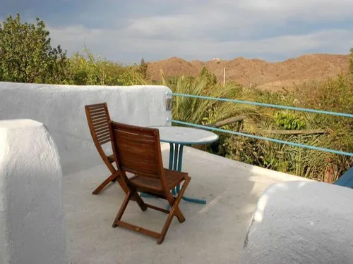
Hasta 5 personas
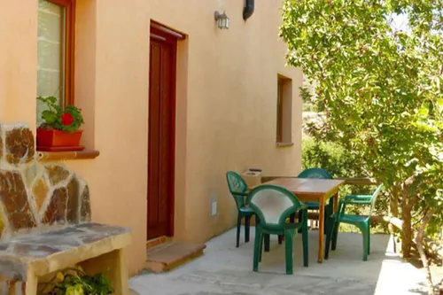
Hasta 5 personas
No se puede fumar dentro de las casas. Mascotas bienvenidas en el camping y, bajo petición, en las casas.
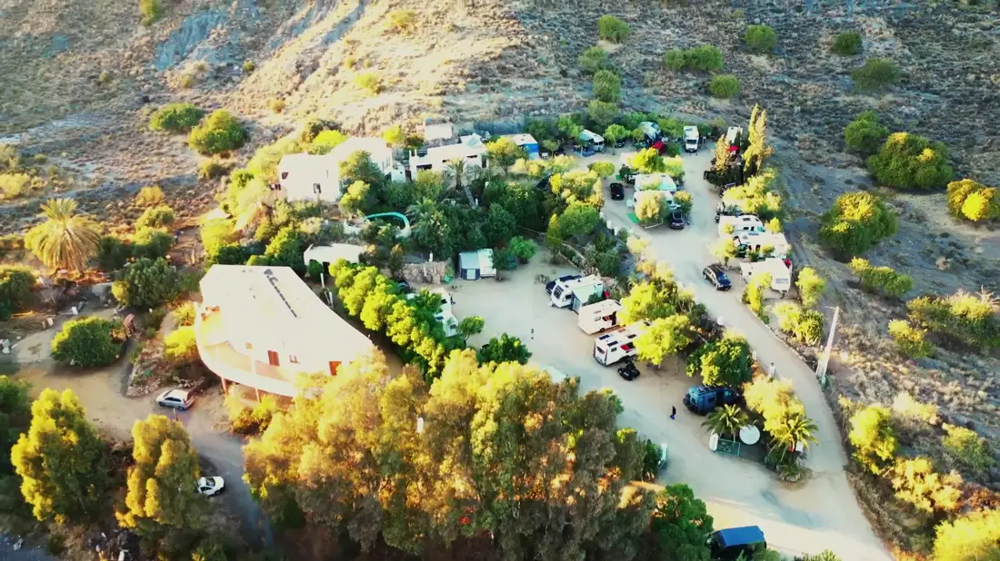
30 parcelas. Ni animación, ni megafonía, ni vecinos a dos metros.
Calas protegidas a un paso, y el Parque Natural de Cabo de Gata al lado.
Larga estancia con tarifa especial. Nuestra especialidad.
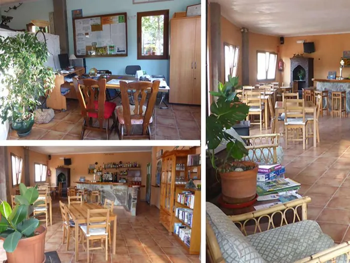
Electricidad en parcela para caravanas y autocaravanas.
Gratuita en duchas y fregaderos, todo el año.
Cobertura en zona común y en las casas.
Lavadoras y secadora a disposición de los clientes.
Punto de encuentro junto a recepción.
Áreas tranquilas y vegetación cuidada.
Bienvenidas en el camping.
Pilas para vajilla y ropa, con agua caliente.
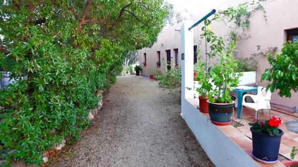
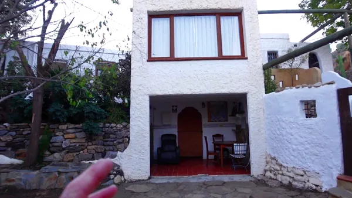
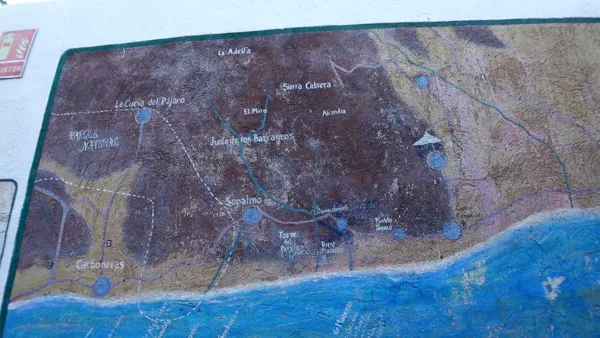
Se leen directamente de nuestro sistema de gestión. Si en recepción cambia una tarifa, cambia aquí.
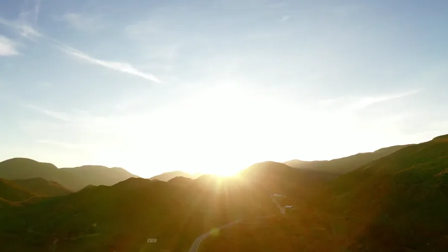
Calculamos con las mismas tarifas que recepción y consultamos la disponibilidad real. Sin pedirte ningún dato personal.
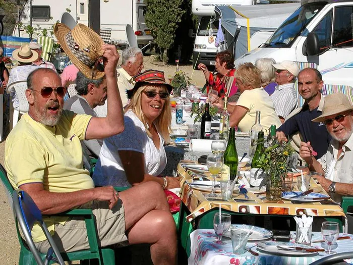
Un paisaje de fuertes contrastes. Desde el camping salen rutas de distinto recorrido, para conocer los pueblos abandonados de la sierra o llegar a las playas naturales de los alrededores.
Casco blanco encaramado a la sierra, con vistas al Mediterráneo.
Cerámica y jarapas a las puertas del Cabo de Gata.
Un paraje subterráneo único en Europa.
Puerto pesquero y la gamba roja del Levante almeriense.
El desierto de los grandes westerns europeos.